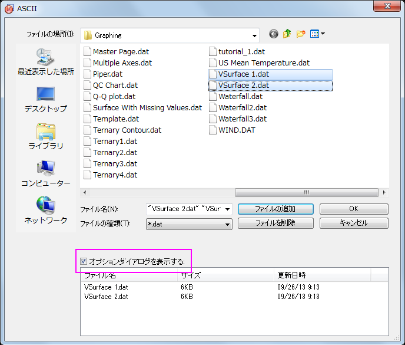
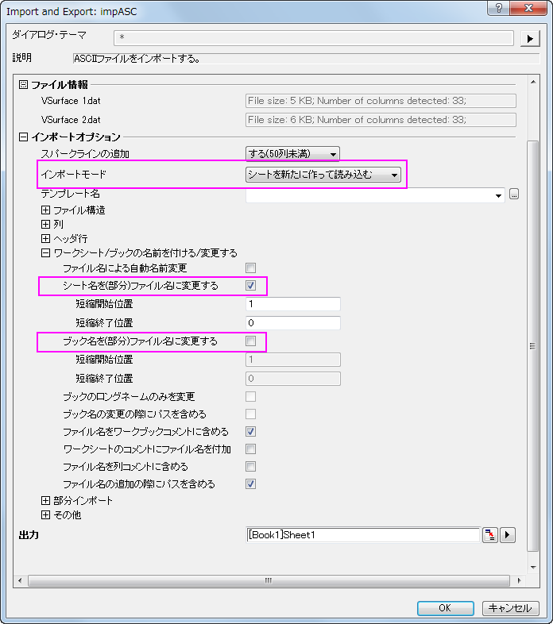
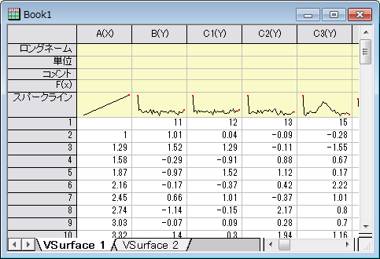
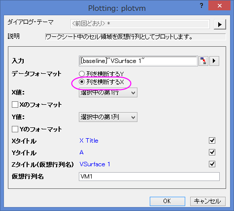
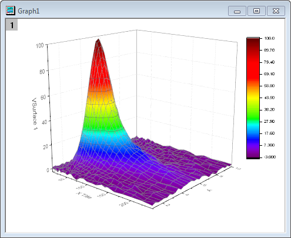
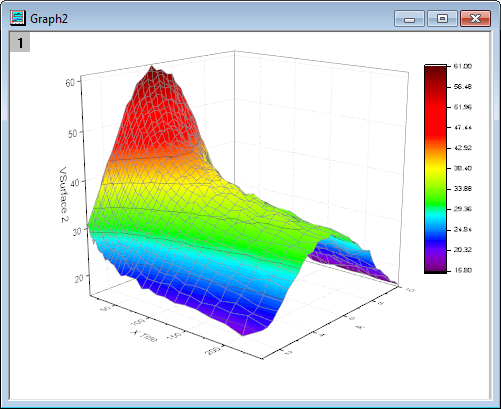
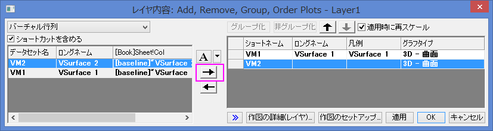
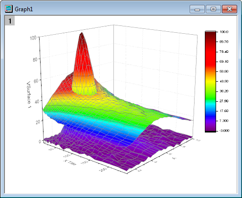
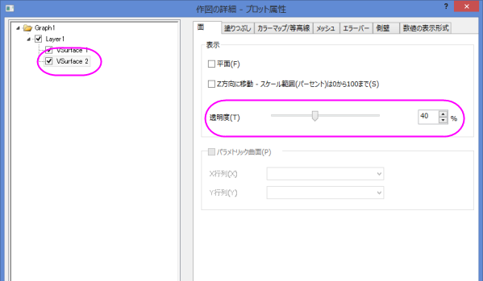

交差した曲面図の作成
3D-Surface-Intersect-VM
サマリー
3D曲面図、3D棒グラフ、等高線図などの多くのグラフは、行列オブジェクトに含まれるデータまたは、ワークシートのセルブロックに配置されたデータから作成することができます。ワークシートに配置されたデータは、仮想行列として参照されます。標準的な行列オブジェクトは、線形にマッピングされたXY座標のみをサポートしていますが、仮想行列は非線形のマッピングもサポートしています。このチュートリアルでは、仮想行列のデータから交差したカラーマップ曲面図を作成する方法を示します。
必要なOriginのバージョン: Origin 2015 SR0以降
学習する項目
このチュートリアルでは、以下の項目について解説します:
- 仮想行列データを使ってカラーマップ曲面図を作成する
- グラフにもう一つの曲面図を追加し、交差した曲面図を作成する
- 透過率を設定する
ステップ
仮想行列から曲面図を作成する
このセクションでは、ワークシート上のデータから曲面図を作成する方法を紹介します。
- 新しいプロジェクトを開始します。
- 標準ツールバーの複数ASCIIのインポートボタン
 をクリックします。
をクリックします。
- ボタンをクリックすると開くダイアログで、\Samples\Graphingフォルダを開き、Ctrlキーを押しながらVSurface
1.dat と VSurface 2.datを選択し、ファイルの追加ボタンをクリックします。
- オプションダイアログを表示するチェックボックスにチェックを付けます。

- OKボタンをクリックします。
- impASC ダイアログで、下図のように設定し、1つのワークブックに、2つのデータVSurface1
と VSurface2 がそれぞれ別のシートとしてインポートされます。

- OK をクリックして、これら2つのデータファイルをインポートします。

データは、一番上の行にX座標値、一番左にある列にY座標値が入っています。X座標は、非線形の間隔であることに注意してください。
- "VSurface 1" シートをアクティブにしてワークシートの左上角にカーソルを移動し、斜めを向いた黒い矢印を表示させます。クリックしてワークシート全体を選択します。
.
- 作図：3D：3Dカラーマップ曲面と選択して、plotvmダイアログを開きます。
- Note：このダイアログは、仮想行列を選択して、3Dまたは等高線の作図メニューを選ぶと開きます。このダイアログでXやYデータがワークシートのどの部分に入力されているかを定義します。
- このダイアログで、次の図のように設定を編集してください。

- OKボタンをクリックして仮想行列を使用してカラーマップ曲面図を作図します。

- ワークシートVSurface 2に対しても同様に最後のステップを実行して、別のカラーマップ曲面図を作成します。今回はplotvmダイアログに、ZタイトルとしてVSurface
2と入力します。

レイヤ内の他の曲面図を追加する
このセクションでは、曲面図が既に含まれているグラフレイヤに別の曲面図を追加する方法を示します。
- グラフ1をアクティブにし、グラフの左上の角にあるレイヤ1アイコン
 を右クリックして、コンテキストメニューからレイヤの内容を選択します。
を右クリックして、コンテキストメニューからレイヤの内容を選択します。
- レイヤ内容ダイアログが開きます。選択可能なデータリストパネル(左側パネル)でVSurface2を選択し、レイヤ内容のボックス(右側パネル)に中央部分の右向き矢印を使用して追加します（その下の左向き矢印はレイヤから選択したデータを取り除くのに使用します）。

- OKをクリックして2つ目の曲面を1つ目に追加します。グラフは次のようになります。

Originは、適切な位置で交差する曲面図を表示します。
透過率を設定する
最後に、2番目の曲面図の透過率を設定し、最初のプロットの重なった部分が見えるようにします。
- 2つ目の曲面上でダブルクリックして、作図の詳細（プロット属性）ダイアログを開きます。
- 面タブで透明度のスライドを40%まで移動し、適用をクリックしてからOKをクリックします。

完成したグラフは下図のようになります。